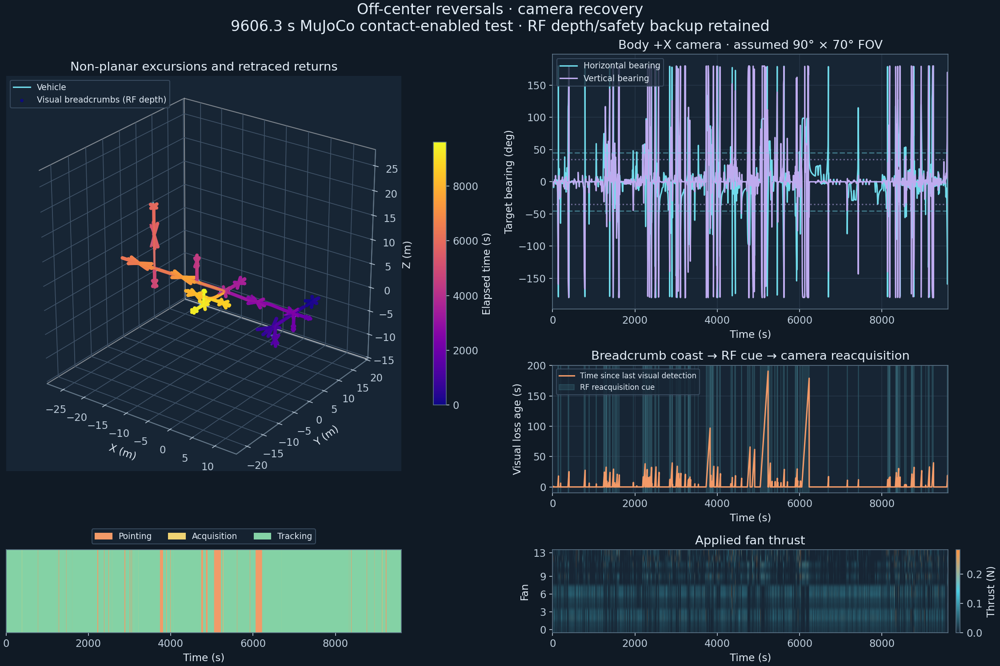
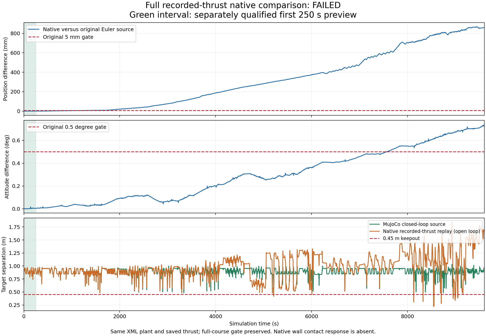

ISS chase and target recovery
Following and body-camera views with synchronized fan thrusts, clearance and pointing, acquisition and tracking telemetry. Guidance uses delayed RF measurements; camera visibility is geometric.
Target recovery: native dynamics check
This sequence shows the first 250 s of the corner chase, shown in 90 s. It includes two visual-loss and reacquisition sequences. Breadcrumbs stop accumulating while the target is invisible; after two seconds, an explicit RF bearing cue assists search. Metric depth and safety feedback continue to use RF.
This native preview propagates the source run’s saved fan commands. Recovery modes and visual breadcrumbs come from that run’s synchronized guidance log.
The mode overlay uses the source’s assumed 90 × 70 degree detection model. The illustrative native camera has its own viewport framing.
The 250 s interval passes unchanged limits: 0.110 mm / 0.0183° engine difference, at least 0.216 m envelope clearance and 0.649 m target separation. Passing this interval does not accept the full native course.
Station traverse
2416.7 s simulated, shown in two minutes. These 3D views come from the native viewer; CSV telemetry is stitched onto the same clock. The native run propagates the recorded thrust with free-body dynamics.
Diagnostic footage: the original Euler-reference comparison fails its 5 mm gate. A separate RK4 comparison agrees closely with native. Native wall contact response is absent; this movie is separate from the extended corner course below.
Completed physical corner course
The contact-enabled MuJoCo source course completes with 0.480 m minimum target separation, 0.166 m sampled envelope clearance and 65 feasible observed-space braking interventions. Every recorded visual loss recovers. The chaser tracks Cupola from outside at standoff. Module bounds overlap, and the station is a mixed NASA/schematic mock-up, not verified whole-ISS CAD.

Methods and native dynamics limits
The 9606.3 s recorded-thrust native replay differs from the original Euler source by 0.868 m / 0.739°. Without controller feedback, accumulated numerical drift brings target separation down to 0.213 m. A separate unchanged-plant RK4 replay agrees with native to 38.54 micrometres / 0.000007443°. The full recorded-thrust propagation exceeds the engine and separation limits. The 250 s sequence is a separately checked interval.
